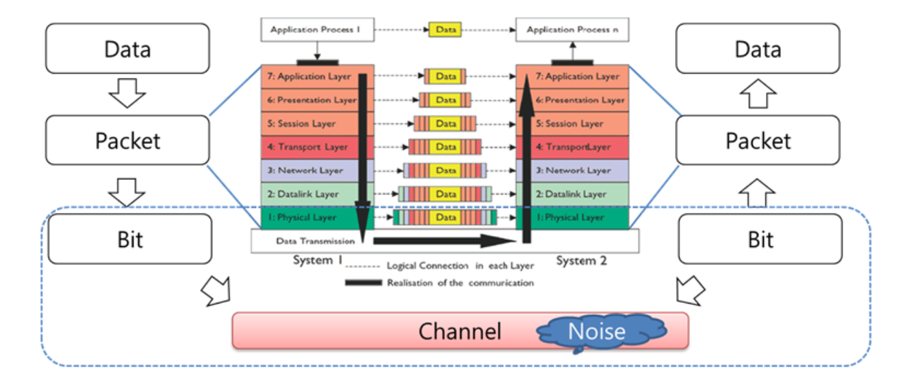

Complete HTML Documentation
Introduction To Web Development
What is Internet
The Internet (or Network) is the global system of interconnected computer networks that uses the Internet protocol suite (TCP/IP) to communicate between networks and devices. It is a network of networks that consists of private, public, academic, business, and government networks of local to global scope, linked by a broad array of electronic, wireless, and optical networking technologies. The Internet carries a vast range of information resources and services, such as the interlinked hypertext documents and applications of the World Wide Web (WWW), electronic mail, internet telephony, streaming media and file sharing.
Service Tiers
Internet service providers (ISPs) establish the worldwide connectivity between individual networks at various levels of scope. End-users who only access the Internet when needed to perform a function or obtain information, represent the bottom of the routing hierarchy. At the top of the routing hierarchy are the tier 1 networks, large telecommunication companies that exchange traffic directly with each other via very high speed fiber-optic cables and governed by peering agreements. Tier 2 and lower-level networks buy Internet transit from other providers to reach at least some parties on the global Internet, though they may also engage in peering. An ISP may use a single upstream provider for connectivity, or implement multihoming to achieve redundancy and load balancing. Internet exchange points are major traffic exchanges with physical connections to multiple ISPs. Large organizations, such as academic institutions, large enterprises, and governments, may perform the same function as ISPs, engaging in peering and purchasing transit on behalf of their internal networks. Research networks tend to interconnect with large subnetworks such as GEANT, GLORIAD, Internet2, and the UK's national research and education network, JANET.

How does the Internet work?
In its simplest terms, its 2 or more computers connected to each other. But those 2 computers could be fundamentally different -- for example, a phone and a desktop PC. Everything is different in them. Now extend this idea to 3 billion devices or even more. To make communication possible between these 2 devices, they agree to send and receive data in a certain way. This agreement is called a protocol. Internet is facilitated extensively via IP or literally, Internet Protocol . Over this protocol, we have even more such as HTTP, SMTP, and a butt load of alphabet soup.

How data is tranferred over computer network?
Data is transferred over computer networks through the process of packet switching, where data is divided into packets, transmitted individually, and reassembled at the receiving end. Steps for Data Transfer Over Computer Network
What is IP?
The most prominent component of the Internet model is the Internet Protocol (IP). IP enables internetworking and, in essence, establishes the Internet itself. Two versions of the Internet Protocol exist, IPv4 and IPv6.
What is IP Address?
For locating individual computers on the network, the Internet provides IP addresses. IP addresses are used by the Internet infrastructure to direct internet packets to their destinations. They consist of fixed-length numbers, which are found within the packet. IP addresses are generally assigned to equipment either automatically via DHCP, or are configured. However, the network also supports other addressing systems. Users generally enter domain names (e.g. "google.com") instead of IP addresses because they are easier to remember; they are converted by the Domain Name System (DNS) into IP addresses which are more efficient for routing purposes.

IPv4
Internet Protocol version 4 (IPv4) defines an IP address as a 32-bit number. IPv4 is the initial version used on the first generation of the Internet and is still in dominant use. It was designed in 1981 to address up to ≈4.3 billion (109) hosts. However, the explosive growth of the Internet has led to IPv4 address exhaustion, which entered its final stage in 2011,[86] when the global IPv4 address allocation pool was exhausted.

IPv6
Because of the growth of the Internet and the depletion of available IPv4 addresses, a new version of IP IPv6, was developed in the mid-1990s, which provides vastly larger addressing capabilities and more efficient routing of Internet traffic. IPv6 uses 128 bits for the IP address and was standardized in 1998. IPv6 deployment has been ongoing since the mid-2000s and is currently in growing deployment around the world, since Internet address registries (RIRs) began to urge all resource managers to plan rapid adoption and conversion.

What is Domain Name System (DNS)
DNS is a hierarchical and distributed naming system that translates domain names into IP addresses. When you type a domain name like www.geeksforgeeks.org into your browser, DNS ensures that the request reaches the correct server by resolving the domain to its corresponding IP address.
Purpose: Humans are bad at remembering numbers like 142.251.42.206. We are good at remembering names like google.com. DNS translates human-friendly domain names into machine-friendly IP addresses.
How Does DNS Work?
The DNS process can be broken down into several steps, ensuring that users can access websites by simply typing a domain name into their browser.

What is PORT Number
A port number is a 16-bit number (ranging from 0 to 65535) that identifies a specific application or service on a computer network device. While an IP address gets data to the correct device, a port number directs that data to the correct application, such as a web browser using port 80 for HTTP or port 443 for HTTPS.

Different Types of Port number

Different Types of Network

Illustration of computer network types by spatial scope. In increasing order of scale:
- NAN → Nanoscale Area Network
- BAN → Body Area Network
- PAN → Personal Area Network
- LAN → Local Area Network
- CAN → Campus Area Network
- MAN → Metropolitan Area Network
- RAN → Radio Access Network
- WAN → Wide Area Network
Difference between Private and Public IP addresses:
Private IP Address
Private IP Addresses are those addresses that work within the local network. These addresses are non-routable on the Internet. The address is assigned by the network router to your particular device. The unique private IP address is provided to every device which is on the same network. In this way, devices communicate with one another on the same network without connecting to the entire Internet. Private IP addresses can provide more security within a particular network. These addresses cannot be seen on the Internet, unlike the public IP address. Only devices within the local network can see the address of one another.

Public IP Address
The Public IP Address of a system is the IP address that is used to communicate outside the network. A public IP address is basically assigned by the ISP (Internet Service Provider)

What is a VPN?
A VPN (Virtual Private Network) is a technology that creates a secure, encrypted connection between your device and the internet. It essentially acts as a private tunnel for your internet traffic, preventing hackers, ISPs, and even governments from monitoring your activities. When using a VPN, your IP address is masked, and your online actions are routed through a remote server, making it harder to track your online activity.

How Does a VPN Work
A VPN works by creating an encrypted tunnel between your device and a remote server. Here's the process simplified:
- Connection Establishment
- Encryption
- Traffic Redirection
- Decryption

What is Web Development?
Web development refers to building, creating, and maintaining websites. It includes aspects such as web design, web publishing, web programming, and database management. It is the creation of an application that works over the internet, i.e., websites.
It Generally Has Three Main Parts:

Frontend Development
Technogies Used In the Frontend Development:
- HTML (HyperText Markup Language):HTML is the language used to create the basic structure and content of web pages. It uses elements, tags, and attributes to organize text, images, and links.
- CSS (Cascading Style Sheets):CSS is used to style the HTML content. It controls colors, fonts, layouts, and how the page looks on different devicesMore importantly, CSS enables you to do this independent of the HTML that makes up each web page.
- JS (JavaScript):avaScript adds life to web pages by making them interactive. It handles things like buttons, animations, and form checks.

Backend Development:
In Backend Development, Server-side programming languages are used to write code that runs on the server, not in the user’s browser. This server-side scripting handles tasks like processing data, managing databases, and controlling how the website works behind the scenes
Technogies Used In the Backend Development:
- JavaScript/Node.js:JavaScript is a popular programming language mainly used to add interactivity on the client side (in browsers). With Node.js, JavaScript can also run on the server side. Node.js is an open-source environment that allows JavaScript to build fast, scalable back-end services like APIs. Many big companies like PayPal, Uber, and Netflix use Node.js for their server-side code.
- PHP:PHP is a server-side scripting language designed specifically for web development. Since PHP code executed on the server-side, so it is called a server-side scripting language. Python: Python is a programming language that lets you work quickly and integrate systems more efficiently.
- Ruby:An object-oriented programming language designed to be simple and natural to use. Ruby helps developers write clean and readable code.
- Java:Java is one of the most popular and widely used programming languages and platforms. It is highly scalable. Java components are easily available.

Database Management
A database is where a website’s data like user's data, product's data are stored and organized. It is part of the backend (server side) that manages and keeps this information safe. Websites use databases to save and access information like user details, content, and transactions. Some databases organize data in tables (called relational databases, like MySQL), while others store data in flexible formats (called NoSQL databases, like MongoDB).
There are basically two types of databases:
- SQL/Relational Database
- MySQL:MySQL is an open-source relational database management system that uses SQL for managing structured data. It’s known for its reliability, ease of use, and performance, widely used in web applications.
- Postgre SQL:PostgreSQL is a powerful, open-source relational database that supports advanced SQL features and complex queries. It handles structured data, ensures ACID compliance, and is known for its reliability and extensibility.
-
NoSQL Databases
A NoSQL database stores data in a flexible, non-tabular format, unlike traditional relational databases. Instead of using tables with rows and columns, NoSQL databases might use documents, key-value pairs, wide-columns, or graphs to store data. This allows them to handle large amounts of unstructured or semi-structured data efficiently. They are designed to scale easily and manage big data applications.
- MongoDB:MongoDB is a NoSQL database storing data in JSON-like documents. It handles unstructured data, supports powerful queries, and scales easily across servers, making it popular for flexible, scalable applications.
- Cassandra:Apache Cassandra is an open-source NoSQL database that is used for handling big data. It has the capability to handle structure, semi-structured, and unstructured data.
- Redis:Redis is an in-memory NoSQL database known for its speed. It supports various data structures like strings, hashes, and lists, making it ideal for caching, real-time analytics, and messaging.
A relational database stores data in tables, similar to a spreadsheet, where each table has rows and columns. The rows hold individual records, and the columns define the data attributes. Tables can be linked to each other through special keys, allowing related data to be connected.
Reference
Watch this complete video to learn more about Networking and Internet.
Documentation: To Learn more about Netwoking